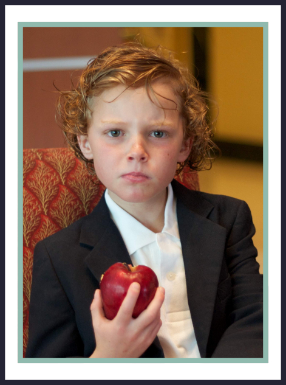
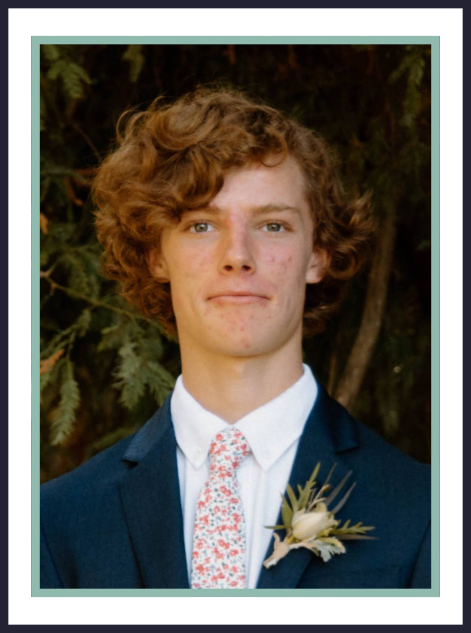

Hi I'm Alden Kruse

Like most kids, I drew to make ideas, thoughts, and dreams come to life and loved the reactions of my friends and siblings when I would make them laugh at my cartoons. As I grew older I dabbled in digital art and animation, with the same love of seeing my ideas come to life. I decided to dive deeper into learning game design and coding. I created my first game in 2020 about a small knight which is when I launched Lone Knight Games.
I continued to develop my coding and design expertise when I got to Wheaton College where my work gained traction. I became the go-to guy to create t-shirts, sweatshirts, stickers, and mugs for campus groups and got to see my work in public. When I began my freelancing, I got to see my skills in communication, illustration, and graphic design bring a client’s vision to life.

Outside of graphic design and game development I am an avid coffee lover, have a special love of color theory, and love collecting and editing video footage with my drone. Throughout my life I have loved almost every type of sport, playing baseball and soccer in high school, and running cross country in both high school and college. This past summer I was a kayaking instructor and lifeguard at a local summer camp. Going into that summer I had never kayaked before and was a very poor swimmer. However, I put all my effort into becoming a master of both, and after 3 weeks I taught over 1000 students of all levels, taking them on class four rapids, and passed my lifeguard certifications. No matter where I am, I carry the same competitive, enthusiastic, and curious spirit into work and hobbies.